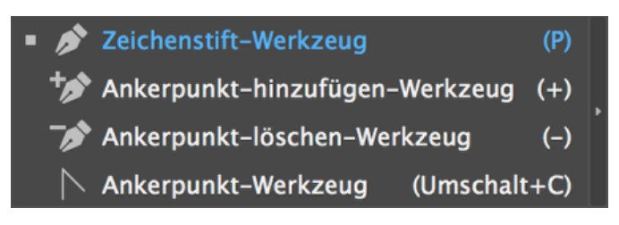
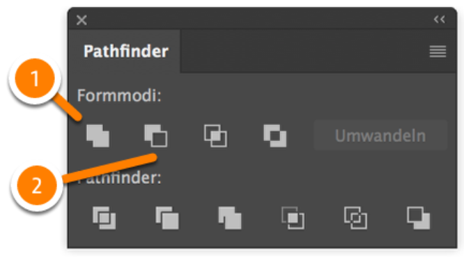

Die Arbeitsoberfläche von Illustrator
Die Arbeitsfläche
 Die Arbeitsfläche von Illustrator, hier mit sechs Zeichenflächen
Die Arbeitsfläche von Illustrator, hier mit sechs Zeichenflächen
- Menüleiste
- Anwendungsleiste
- Steuerleiste
- Werkzeugleiste
- Zeichenfläche(n)
- Montagefläche
- Name des Dokuments
- Bedienfelder
Werkzeugleiste
 Die Werkzeugleiste von Illustrator
Die Werkzeugleiste von Illustrator
- Auswahl-Werkzeug (V)
- Zauberstab-Werkzeug (Y)
- Zeichenstift-Werkzeug (P)
- Text-Werkzeug (T)
- Rechteck-Werkzeug (M)
- Shaper-Werkzeug (Shift + N)
- Drehen-Werkzeug (R)
- Breitenerkzeug (Shift + W)
- Formerstellungswerkzeug
(Shift + M)
- Gitter-Werkzeug (U)
- Pipette-Werkzeug (I)
- Symbol-aufsprühen-Werkzeug
(Shift + S)
- Zeichenflächenwerkzeug
(Shift + O)
- Hand-Werkzeug (H)
- Fläche (X)
- Standardfläche und -kontur (D)
- Farbe (,), Verlauf(.), Ohne (#)
- Normal zeichnen/Dahinter zeichnen/Innen zeichnen (Shift + D)
- Bildschirmmodus ändern (F)
- Direktauswahl-Werkzeug (A)
- Lasso-Werkzeug (Q)
- Kurvenzeichner (Shift + Ö)
- Liniensegment-Werkzeug
(Shift + .)
- Pinsel-Werkzeug (B)
- Radiergummi-Werkzeug
(Shift + E)
- Skalieren-Werkzeug (S)
- Frei-transformieren-Werkzeug
(E)
- Perspektivenraster-Werkzeug
(Shift + P)
- Verlaufwerkzeug (G)
- Angleichen-Werkzeug (W)
- Vertikales Blakendiagramm (J)
- Slice-Werkzeug (Sift + K)
- Zoomwerkzeug (Z)
- Fläche und Kontur vertauschen
(Shift + X)
- Kontur (X)
- Symbolleiste bearbeiten
Zeichenwerkzeuge

Die Zeichenwerkzeuge von Illustrator
- Endpunkte
- Eckpunkte
- Kurvenpunkte
Pathfinder

Der Pathfinder von Illustrator
- Vereinen: einzelne Pfade zu einem größeren Pfad zusammenfügen
- Überlappungsbereich entfernen: stanzt vorne liegende Objekte aus Hinterem aus
Wichtige Funktionen
- Ebenen-Fenster: Organisation in Ebenen sorgt für Überschaubarkeit
- Endpunkte zusammenfügen: Endpunkte z.B. mit Direktauswahl-Werkzeug markieren, dann Objekt > Pfad > Zusammenfügen
- Kontur nachziehen lassen: Objekt > Pfad > Konturlinie
- Effekt als Pfad berechenn lassen: Objekt > Aussehen umwandeln
- Alle Bedienfenster ein-/ausblenden: Tab-Taste
- Ganze Zeichenfläche: Strg/Cmd + O
- Wechsel zwischen normaler Ansicht / Pfadansicht: Strg/Cmd + Y
- Letzte Transformatin wiederholen: z.B. nach dem Kopieren beim Drehen eines Objektes: Objekt > Transformieren > Erneut Transformieren